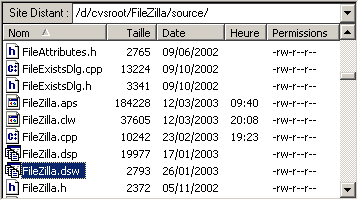
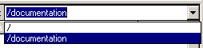
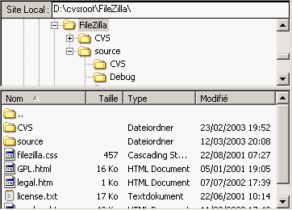
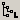

L'affichage des Fichiers et Dossiers
1. Le site distant
L'affichage des fichiers et dossiers du site distant se trouve
dans la partie droite de la fenêtre principale. Avec cet affichage, vous
pouvez parcourir le serveur FTP et lancer les téléchargements.

La liste des fichiers et dossiers
Chaque ligne représente un fichier ou
un dossier. Les icônes des fichiers et dossiers vous aident à identifier
les fichiers et dossiers rapidement. Les en-têtes de chaque colonne décrivent
leur signification. La signification des quatre premières colonnes est
claire: Nom du fichier, Taille du fichier, Date et heure. La dernière
colonne intitulée "Permissions" vous indique les droits d'accès
que vous avez sur les fichiers. Vous n'avez pas vraiment à vous préoccuper
de ces permissions. Le premier caractère indique si l'entrée est
un fichier, un répertoire ou un lien. Les derniers caractères
sont composés de trois groupes de trois caractères chacun. Le
premier groupe décrit les droits de propriété, le second
groupe les droites de groupe et les derniers les droits publiques. Un r signifie
que vous avez accès en lecture, w signifie un droit d'accès en
écriture et x le droit d'exécuter un fichier. Vous pouvez trier
la liste en cliquant sur un en-tête de colonne. Une petite flèche
grisée indique la colonne qui a servi au tri et la direction du tri.
Vous pouvez basculer entre les directions de tri en cliquant à nouveau
sur l'en-tête.
Vous pouvez modifier le style de la liste et
la visibilité des colonnes à l'aide du menu
de la fenêtre principale.
Parcourir le serveur
Vers le bord supérieur vous remarquerez
une liste déroulante. Le dossier actuel est listé ici. Vous pouvez
également entrer un nouveau dossier. Pressez sur Enter et FileZilla
basculera vers ce dossier. Vous pouvez aussi cliquer sur la flèche à
droite pour ouvrir le menu déroulant contenant une liste de tous les
répertoires que vous avez visité sur ce serveur. Cliquez sur un
élément pour basculer vers ce répertoire.

En dessous se trouve la liste des fichiers et
dossiers. La première entrée de la liste est toujours "..".
Elle représente le dossier parent du dossier actuel. Vous pouvez accéder
à un dossier en double-cliquant dessus ou en utilisant le menu contextuel.
Téléchargement de fichiers
Il existe trois façons de télécharger
un fichier: vous pouvez double cliquer dessus, vous pouvez utiliser le menu
contextuel ou vous pouvez utiliser la fonction glisser-déposer vers la
liste des fichiers locaux. Vous pouvez opérer sur un dossier de la même
façon. Vous pouvez aussi sélectionner plusieurs fichiers et dossiers
pour un transfert en une opération, sauf que bien entendu le double-clic
n'est pas disponible dans ce cas de figure. Pour ajouter des éléments
à la file d'attente pour un transfert différé, vous pouvez
également utiliser le menu contextuel ou utiliser le glisser-déposer
vers la file d'attente.
Le menu contextuel
Faites un clic droit sur un fichier ou un dossier
de la liste pour afficher le menu contextuel.
|
Télécharger
|
- |
REçoit les fichiers et dossiers sélectionnés.
La réception démarre immédiatement.
|
|
Ajouter à la file d'attente
|
- |
Ajoute tous les éléments sélectionnés
vers la file d'attente de transfert. Utilisez le bouton  de la barre d'outils pour démarrer le transfert.
de la barre d'outils pour démarrer le transfert.
|
|
Télécharger sous
|
- |
Vous demande le nom d'utilisateur et le mot de passe
qui seront requis pour la réception des fichiers et dossiers sélectionnés.
|
|
Ouvrir
|
- |
Ouvre le dossier sélectionné.
|
|
Afficher/Éditer
|
- |
Si vous utilisez cette commande, FileZilla reçoit
le ficher sélectionné dans un dossier temporaire. Puis il
ouvre le fichier avec l'utilitaire d'Affichage/Édition que vous
avez choisi dans la boîte de dialogues des Paramètres. Quand
vous fermez cet utilitaire et que le fichier a été modifié,
FileZilla vous demandera si vous voulez mettre le fichier à jour
sur le serveur.
|
|
Créer un Répertoire
|
- |
Crée un nouveau dossier dans le dossier actuel.
Vous devez entrer le nom du nouveau dossier avant qu'il soit créé.
|
|
Supprimer
|
- |
Supprime tous les fichiers et dossiers sélectionnés.
Une confirmation vous sera demandée.
|
|
Renommer
|
- |
Renomme les fichiers sélectionnés. Une
confirmation vous sera demandée pour le nouveau nom.
|
|
Propriétés
|
- |
Vous permet de modifier les attributs du fichier sélectionné.
Cette fonction n'est pas supportée par tous les serveurs FTP.
|
2. Le site local
L'affichage des fichiers et dossiers de site local se situe
dans la partie gauche de la fenêtre principale. Avec cet affichage, vous
pouvez parcourir votre disque local et initialiser les mises à jour vers
le serveur.

La liste de fichiers et dossiers
La liste locale des fichiers et dossiers est
très similaire à celle des fichiers et dossiers distants. L'en-tête
de chaque colonne décrit sa signification. Vous pouvez aussi trier la
liste et la petite flèche grisée indique la colonne triée
et la direction du tri.
Vous pouvez modifier le style de la liste et
la visibilité des colonnes à l'aide du menu
de la fenêtre principale.
Parcourir le site local
Vers le bord supérieur vous remarquez
un champ de texte. Le dossier actuel est listé ici. Vous pouvez également
entrer un nouveau dossier. Appuyez sur Enter et FileZilla basculera vers
ce dossier.
En dessous se trouve une arborescence. Elle affiche
la structure du dossier de votre disque dur. Le dossier courant est toujours
sélectionné. Sélectionnez un autre élément
pour basculer vers ce dossier. L'arborescence peut être modifiée
en utilisant le bouton

de la barre d'outils.
Enfin, en bas se trouve la liste des fichiers
et dossiers. La première entrée de la liste est toujours "..".
Elle représente le dossier parent du dossier actuel. Vous pouvez basculer
vers un dossier en double-cliquant dessus ou en utilisant le menu contextuel.
Mise à jour des fichiers
Il existe trois façons d'envoyer un fichier:
vous pouvez double cliquer dessus, vous pouvez utiliser le menu contextuel ou
vous pouvez utiliser la fonction glisser-déposer vers la liste des fichiers
distants. Vous pouvez opérer sur un dossier de la même façon.
Vous pouvez aussi sélectionner plusieurs fichiers et dossiers pour un
transfert en une opération, sauf que bien entendu le double-clic n'est
pas disponible dans ce cas de figure. Pour ajouter des éléments
à la file d'attente pour un transfert différé, vous pouvez
également utiliser le menu contextuel ou utiliser le glisser-déposer
vers la file d'attente.
Le menu contextuel
Faites un clic droit sur un fichier ou un dossier
de la liste pour afficher le menu contextuel.
|
Charger sur le serveur
|
-
|
Envoie les fichiers et dossiers sélectionnés.
L'envoi démarre immédiatement.
|
|
Ajouter à la file d'attente
|
-
|
Ajoute tous les éléments sélectionnés
vers la file d'attente de transfert. Utilisez le bouton
de la barre d'outils pour démarrer l'envoi.
|
|
Charger sous
|
-
|
Vous demande le nom d'utilisateur et le mot de passe
qui seront requis pour la mise à jour des fichiers et dossiers
sélectionnés.
|
|
Ouvrir
|
-
|
Ouvre le dossier sélectionné.
|
|
Afficher/Éditer
|
-
|
Ouvre le fichier avec l'utilitaire d'Affichage/Édition
que vous avez choisi dans la boîte de dialogues des Paramètres.
|
|
Créer un Répertoire
|
-
|
Crée un nouveau dossier dans le dossier actuel.
Vous devez entrer le nom du nouveau dossier avant qu'il soit créé.
|
|
Supprimer
|
-
|
Supprime tous les fichiers et dossiers sélectionnés.
Une confirmation vous sera demandée.
|
|
Renommer
|
-
|
Renomme les fichiers sélectionnés. Une
confirmation vous sera demandée pour le nouveau nom.
|
3. Raccourcis clavier
-
F5 - Réinitialise toutes les listes
-
CTRL + A - Sélectionne tous les fichiers
de la liste de fichiers actuelle.
-
DEL - Supprime tous les fichiers et dossiers sélectionnés.
Les fichiers seront déplacés dans la corbeille
-
SHIFT + DEL - supprime tous les fichiers et dossiers
sélectionnés. Les éléments seront détruits
et non déplacés vers la corbeille.